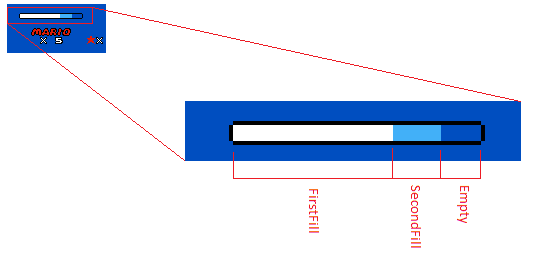
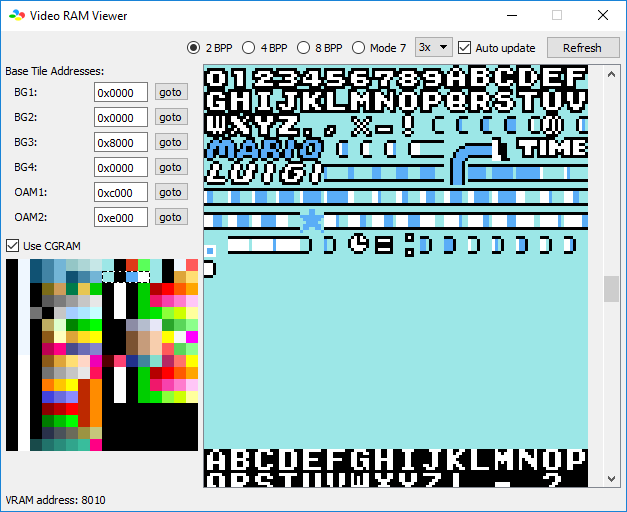

Back
See this ASM file (again, link will break if moved or deleted). View
this image for table format.
How a Double Bar works

Remember that this is a lyer 3 graphic using 2bpp (2 bits per pixel; 4 colors stored: 1 transparent and 3 other colors), thus, the texture of the filled region of the bar
is now flat.
Just to warn you, because layer tiles cannot overlap each other if they are in the same layer, the tiles had to be combined in order to always display 2 fills correctly. This means that
there a huge amount of combinations of the double-fill graphic (I've ordered the tiles with SecondFill increases until full byte/8x8 tile, then increments FirstFill by 1 and repeat):

So be very careful when you have more pieces per 8x8, because that would add more tiles for both the two fills, taking up more space exponentially. Because of that, the amount of fill
for handling each 8x8 tile are now 8-bit rather than 16. You can avoid that by using sprite OAM and have them literally overlap without combining them.
Here are some notes to keep in mind:
- The amount of fill for SecondFill does not measure from the edge of FirstFill, rather it measures from the leftmost of the bar like FirstFill would. So if you have 1
for FirstFill and 5 for SecondFill, 4 SecondFill pieces appear just after FirstFill, not 5. Should SecondFill be less than or equal to FirstFill, it simply won't display.
- If you want something like this without having your graphics hogged up, there is an alternative way on doing this, by using “pseudo transparency”. By using a frame
counter (best if it doesn't freeze on certain events, like address $13 when $9D is set in smw), make it display 2 values depending on the frame, preferably flicker every even or
odd frames.
- There are more explanations in the ASM file linked here, and I wouldn't keep rambling about every detail, since it is very complex.